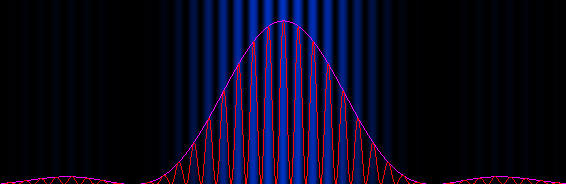
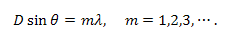
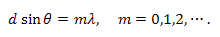
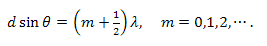

The EJS Multiple Slit Diffraction model allows the user to simulate Fraunhofer diffraction through single or multiple slits. The user can modify the number of slits, the slit width, the slit separation and the wavelength of the incident light. The scale of the diffraction pattern can also be changed and a plot of the light intensity can be toggled on and off with a checkbox.
The minima of single slit diffraction are determined by:

where D is the single slit width. For double slit interference, constructive interference (bright spots) are found at:

and destructive interference dark spots are located at:

where d is the distance between slits.
Multiple slits will sharpen (narrow) the regions of constructive interference. The overall pattern from multiple slits will be the two-slit pattern multiplied by the single slit diffraction envelope.
The Multiple Slit Diffraction model was created by Fu-Kwun Hwang using the Easy Java Simulations (EJS) modeling tool. It was adapted to EJS version 4.1 by Robert Mohr and Wolfgang Christian at Davidson College. You can examine and modify the model for this simulation if you have EJS installed by right-clicking within the diffraction frame and selecting "Open Ejs Model" from the pop-up menu. Information about EJS is available at: <http://www.um.es/fem/Ejs/> and in the OSP ComPADRE collection <http://www.compadre.org/OSP/>.